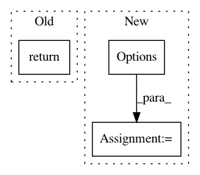

ce9bf66b7397603025acfea2dede2cda5ad5c2a0,tf_agents/replay_buffers/replay_buffer.py,ReplayBuffer,as_dataset,#ReplayBuffer#Any#Any#Any#Any#,122
Before Change
tf.nest.map_structure(lambda spec: spec.dtype, self._data_spec)))
if single_deterministic_pass:
return self._single_deterministic_pass_dataset(
sample_batch_size=sample_batch_size,
num_steps=num_steps,
num_parallel_calls=num_parallel_calls)
else:
return self._as_dataset(
sample_batch_size=sample_batch_size,
num_steps=num_steps,
After Change
num_parallel_calls=num_parallel_calls)
if self._stateful_dataset:
options = tf.data.Options()
options.experimental_allow_stateful = True
ds = ds.with_options(options)
return ds
In pattern: SUPERPATTERN
Frequency: 3
Non-data size: 3
Instances
Project Name: tensorflow/agents
Commit Name: ce9bf66b7397603025acfea2dede2cda5ad5c2a0
Time: 2019-10-15
Author: kokiopou@google.com
File Name: tf_agents/replay_buffers/replay_buffer.py
Class Name: ReplayBuffer
Method Name: as_dataset
Project Name: tensorflow/agents
Commit Name: aadcd4d9488bef6378291e6f0f47e72a62378cb2
Time: 2019-08-27
Author: no-reply@google.com
File Name: tf_agents/replay_buffers/tf_uniform_replay_buffer.py
Class Name: TFUniformReplayBuffer
Method Name: _as_dataset
Project Name: ilastik/ilastik
Commit Name: a56077ccaaccab72728d1254895ddb6104361f27
Time: 2013-04-10
Author: ullrich.koethe@iwr.uni-heidelberg.de
File Name: ilastik/applets/base/appletSerializer.py
Class Name: AppletSerializer
Method Name: repairFile